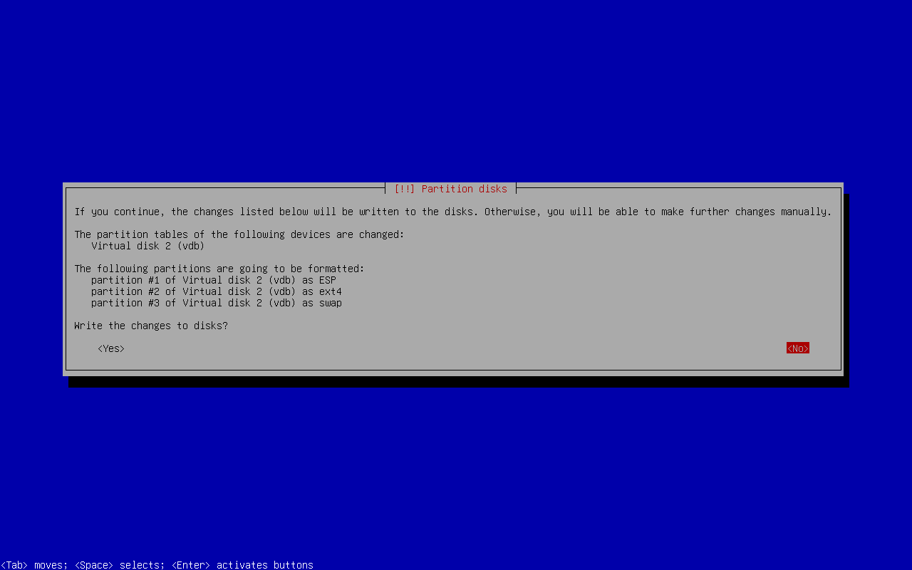

User guide
This guide describes ErdOS 1 Alpha 5, which includes the live window overview, configurable launcher dock and Dark Glacier wallpaper. This is an experimental prerelease: start in a VM and keep backups before installing on real disks.
Try the live desktop
- Download the Alpha 5 amd64 ISO and its SHA-256 checksum, or build from source. See release notes and verify the download.
- Attach the ISO to a VM, or use an image writer to write it to a USB device. Writing an image erases that USB device; copying the ISO file onto a formatted drive is not the same operation. Debian documents USB installation media.
- Use a 64-bit Intel/AMD system and disable Secure Boot. Choose Try ErdOS in the boot menu.
- At the console, log in as
userwith passwordlive. labwc starts automatically on tty1.
The public live account has sudo access. There is no SSH server, graphical login manager or configured persistence. Live-session changes disappear on reboot. Other virtual consoles stay in text mode.
Choose Logout in the right-click menu to end the graphical session and return to a fresh login prompt. Log in again to start labwc.
Verify a download
Put the ISO and erdos-amd64.iso.sha256 from the same release in one directory, then run:
sha256sum -c erdos-amd64.iso.sha256The result should say erdos-amd64.iso: OK. If it fails, do not boot that copy; check that the files came from the same release and download again. SHA256SUMS verifies all uploaded release assets when they are present together.
A checksum detects changed bytes. An unsigned checksum does not prove a publisher’s identity.
Install to disk
Select Install ErdOS in the boot menu to start the offline installer. Reboot out of the live desktop to select it. The official Debian text installer copies the configured desktop and sets up accounts and GRUB.
Choose language, keyboard, timezone, account details and partitioning. Installation runs entirely from the USB without Ethernet-driver, Wi-Fi, DHCP, NTP or mirror-download questions. Available firmware is retained for the installed desktop. Internet access is not needed to install; connect after the first boot. Specialized hardware may still need additional drivers.
Your first installed account gets sudo access using its own password. There is no separate root-password question, package-selection screen or mirror-country/server/proxy selection. BIOS bootloader destination selection remains manual.
Replace the entire disk
- Back up anything you need from the destination disk.
- Choose Guided — use entire disk.
- Select the intended disk by its model and capacity. Check carefully when several disks or USB devices are connected.
- Choose a partition layout and review the resulting plan.
- Approve the final Write the changes to disks? prompt only when the listed disk and partitions are correct.
Whole-disk installation erases the selected disk when you confirm. Disk selection and the final erase/write approval stay manual.

Install alongside another OS
- Back up the existing system. In that OS’s disk-management tools, shrink its partition and leave at least 20 GB of unallocated space. Free space inside its filesystem is not enough.
- Boot the ErdOS USB in the same BIOS/UEFI mode as the existing OS.
- Choose Guided — use the largest continuous free space. If unavailable, stop and prepare sufficient unallocated space first.
- Check that only new Linux partitions will be formatted. Preserve the existing OS partitions and, on UEFI systems, its EFI System Partition.
- Review the plan and the final write confirmation before approving.
Do not choose whole-disk partitioning for an alongside installation. GRUB can detect another OS, but encrypted systems, Windows/macOS and unusual firmware may require additional boot configuration; those setups have not been tested by this project.

First boot
Remove the ISO/USB when installation finishes, boot the installed system and log in with the account you created. labwc starts on tty1. Connect to Wi-Fi using Settings → Network. Test administrative access with sudo -v, entering your normal account password, then run sudo apt update.
APT is already configured for Debian Trixie, updates, security and non-free firmware. No manual mirror setup or source-file editing is needed. Live and installed sessions share signed HTTPS repositories. Automatic clock synchronization starts when a time server is reachable. The installer writes repository settings locally; the first apt update downloads their indexes after you connect.
An installed system boots automatically after a one-second hidden menu timeout. Press Esc during startup to open the boot menu for recovery or another OS. Local login clears old console output; Logout returns to the login prompt.
Desktop and applications
Right-click the desktop for Terminal, Web Browser, File Manager and Text Editor. These use your selected defaults; initially Sakura, regular Firefox, PCManFM and Twig. The Applications submenu reads installed desktop entries when opened, so added or removed graphical applications appear without a polling daemon or APT hook. Command-line tools need a desktop entry to show there.
The dock appears in the window overview. Open the labwc menu with a three-finger tap/click, Super+Space, the Menu key, desktop right-click or Super + right-click over an application. Tap Super to toggle the live window overview, and use Super+Shift+O for the Workspaces menu. Settings provides sound, network, battery and time controls. labwc briefly shows its own popup when switching workspaces.
- Audio: open Settings → Sound to choose output/input devices, adjust volume or mute. Supported volume and mute keys also work.
- Networking: open Settings → Network to enable Wi-Fi, refresh networks, connect or manage saved connections. Advanced profiles are available through Advanced Network Configuration in Applications.
- Bluetooth: open Settings → Bluetooth to scan, pair and connect devices.
- Battery: open Settings → Power for charge, charging status and hardware-reported health.
- Clock: open Settings → Date & Time for the current time, time zone and automatic synchronization status.
- Files: PCManFM handles USB mounting and network shares. Open
smb://server/sharefor SMB; automatic Windows WS-Discovery browsing is not guaranteed. SFTP uses the SSH client. - Text: Twig opens plain text and common source files by default. Mounted shares are exposed through GVfs FUSE for editor access.
- Touchpad: natural scrolling, two-finger scrolling and two-finger right-click are enabled on supported devices.
Network passwords are requested when needed; there is no bundled desktop keyring. Most manuals, package documentation and non-English translations are trimmed. Package copyright notices remain.
The bottom of the right-click menu contains Logout, Reboot and Power off. Logout ends labwc and the tty1 login session, returning to the console login prompt.
Disk and RAM usage
Measured on a fresh offline installation of the published Alpha 5 ISO on November 24, 2026:
| Build | Installed disk | Idle RAM |
|---|---|---|
| ErdOS 1 Alpha 5 | 1.751 GiB | 369.8 MiB |
UEFI, 2 vCPUs, 2 GiB RAM, 24 GiB install disk and 1280×800 software-rendered display. The default desktop and wallpaper are active; the overview is closed. No network adapter, package updates or app windows before measurement. Disk counts root and EFI used blocks, excluding swap. RAM is MemTotal minus MemAvailable: five samples 10 seconds apart after a two-minute settle. Hardware and graphics drivers change these results.
Raw samples, ISO checksum and earlier baselines · Measurement method and validation.
Settings

Press Super + I or choose Settings in the menu. Appearance, Default Programs, Touchpad, Keyboard, Overview Dock, Menu, Startup Applications, Gestures, Displays, Sound, Network, Bluetooth, Power and Date & Time share one GTK window.
Grouped controls use Apply/Revert, editors show readable shortcuts and menu entries, and closing protects unsaved edits. Network and Bluetooth keep their own action buttons. Pending changes finish before Settings exits; no permanent Settings service is added. Overview Dock can hide the entire dock, edit/reorder launchers and toggle labels, clock and battery. Apply changes, then reopen the overview. All controls and persistence details.
Power displays battery information and keeps Debian defaults. Date & Time shows the clock, time zones and synchronization status. Displays has resolution confirmation and rollback. Startup Applications edits ~/.config/labwc/autostart, checks shell syntax and keeps a previous-version backup. Changes run at the next login.
Default programs
Use Settings → Default Programs. Install an alternative, refresh the application list, choose it and click Apply. The root menu and Super+Enter, Super+B, Super+E and Super+T use these choices immediately. Applications still lists actual app names.
Browser, folder and plain-text choices share the normal desktop associations, so a default browser chosen elsewhere is honored too. Terminal selection is per user, with the system terminal as fallback. Other file types retain their own associations. Details.
Backgrounds
Dark Glacier is the default wallpaper. In Settings → Appearance, choose the light/dark preference, a solid desktop color, or an image with Fill, Fit, Center or Tile. Firefox and supporting sites follow the system preference when their own theme settings allow it. Apply validates and copies a custom image into your own configuration. Moving the original file does not break it.
Remove image and Apply restores the solid color and deletes only the private copy. Swaybg is the single background process. The desktop background stays static. The overview adds its own snapshot blur and optional dock only while open.
Keyboard shortcuts
Super is usually the Windows key. Workspace bindings use key names and support the usual Shift + number-row combinations. Keypad tiling supports either NumLock state.
| Shortcut | Action |
|---|---|
| Super + Enter / Ctrl + Alt + T | Open the default terminal (Sakura initially) |
| Super + B | Open the default web browser (Firefox initially) |
| Super + E | Open the default file manager (PCManFM initially) |
| Super + I | Open ErdOS Settings |
| Super + T | Open the default text editor (Twig initially) |
| Super + Q / Alt + F4 | Close focused window |
| Super + H | Minimize |
| Tap Super | Open or close the live window overview |
| Super + Shift + O | Workspaces menu |
| Super + Space / Menu | labwc menu |
| Ctrl + Super + Left / Right | Cycle windows directly (gesture fallback) |
| Super + Tab / Shift + Super + Tab | Cycle windows forward / backward |
| Shift + Super + top-row 1–9 | Switch an existing workspace |
| Super + F1–F9 | Alternative workspace switching |
| Ctrl + Shift + Super + top-row 1–9 | Move a window to that workspace without following |
| Super + Left / Right | Tile left / right half |
| Super + Up / Super + M | Maximize |
| Super + Down | Restore original size and position after tiling/maximizing |
| Super + numpad 4 / 6 / 8 / 2 | Tile left / right / top / bottom half |
| Super + numpad 7 / 9 / 1 / 3 | Tile top-left / top-right / bottom-left / bottom-right quarter |
| Super + numpad 5 | Maximize |
| Alt + left-drag / right-drag | Move / resize a window |
| Print Screen | Save full desktop screenshot |
| Alt + Print Screen | Save focused-window content screenshot |
| Shift + Print Screen | Select an area for a screenshot |
Screenshots save silently to ~/Pictures/Screenshots. Repeated tiling and maximization retain a window’s original geometry until restored; restore also keeps the window visible if its former monitor has been unplugged.
Hardware keys
Standard volume, speaker mute and microphone mute keys are bound through PipeWire’s wpctl. Volume steps are 5%, capped at 100%. Screen brightness uses 5% steps and keyboard backlights use 10% steps through brightnessctl, when the hardware provides suitable controls. External-monitor DDC brightness is not included.
Fn/media-key mode is usually controlled by keyboard firmware. In a VM, the host or viewer can intercept keys before ErdOS receives them. Test the viewer’s send-key or keyboard-grab options before changing guest bindings.
Touchpad gestures
The compositor handles deliberate swipes directly, once per gesture after the configured movement threshold. Small and ambiguous movements are ignored. There is no separate raw-input listener or gesture daemon.
| Gesture | Action |
|---|---|
| 3-finger tap / click | Open the desktop menu, including over applications |
| 3 fingers up / down | Open / close the live window overview |
| 3 fingers left / right | Previous / next window on the current workspace |
| 4 fingers left / right | Next / previous workspace, wrapping at the ends |
| 4 fingers up / down | Disabled by default; configurable in Settings |
The overview shows live windows across workspaces. Click a window, or use the arrow keys and Enter. The arrow keys reveal a white selection glow. Tap Super again or swipe three fingers down to close the overview. The dock has app shortcuts, Wi-Fi settings, a 12-hour clock and battery status.

Workspaces remain dynamic with one empty spare after the last occupied/current workspace. Empty gaps retain their numbers; only unused trailing spaces disappear. Use the Workspaces submenu or Super + Shift + O to see workspaces and their windows.
Change swipes in Settings → Gestures. In Settings → Menu, independently toggle three-finger tap/click and Super + right-click. The touchpad option replaces middle-click; disabling it restores middle-click. Mouse middle-click, desktop right-click and Super + Space remain available. Hardware must support tapping/clickfinger as applicable.
Multiple monitors
Automatic layout keeps the laptop display at the left and extends external monitors to its right. Drag windows between them; all displays share the same workspaces. A one-shot helper runs on hotplug rather than polling.
Settings → Displays reads supported modes through Wayland output management. Test a resolution and Keep it within 15 seconds, or the previous layout returns. Closing Settings or the confirmation helper also reverts an unconfirmed change. Confirmed modes are restored for the same connected outputs. Disabling automatic layout preserves the current arrangement.
Troubleshooting
Print Screen does nothing
Saving is silent: check ~/Pictures/Screenshots. Run command -v grim and erdos-screenshot in Sakura. Selected-area capture also needs slurp. A focused-window capture is invoked by labwc with its window geometry. If direct capture works but the key does not, check the VM viewer or keyboard Fn mode.
Sudo says my account is not in the sudoers file
Current installations grant the first account sudo. On an older installation where a separate root password was set, note your login name using whoami, run su -, and enter that root password. As root, run apt-get install sudo and adduser YOUR_LOGIN_NAME sudo. Replace the placeholder with your actual login name. Log out completely and back in before testing sudo -v.
Wi-Fi or another device is missing
ErdOS includes firmware for common hardware, not every device. Identify the hardware and use Debian packages for additional firmware or drivers. An Ethernet connection or supported USB network adapter may help get online. Firmware absent from the ISO cannot be made available merely by hiding installer questions.
Settings shows no battery
The Power tab reports no battery when the kernel exposes none, including most VMs and desktop computers. Physical battery and backlight support depends on the kernel and device firmware.
I need more package documentation or translations
Remove /etc/dpkg/dpkg.cfg.d/01-minimal-docs with sudo, then reinstall the affected packages. Copyright notices are retained even in the minimal image.
For a reproducible bug, include the ISO checksum, boot mode, live/installed status, hardware or VM model and steps in a GitHub issue. Redact private information. Validation and known limitations describe the test coverage.